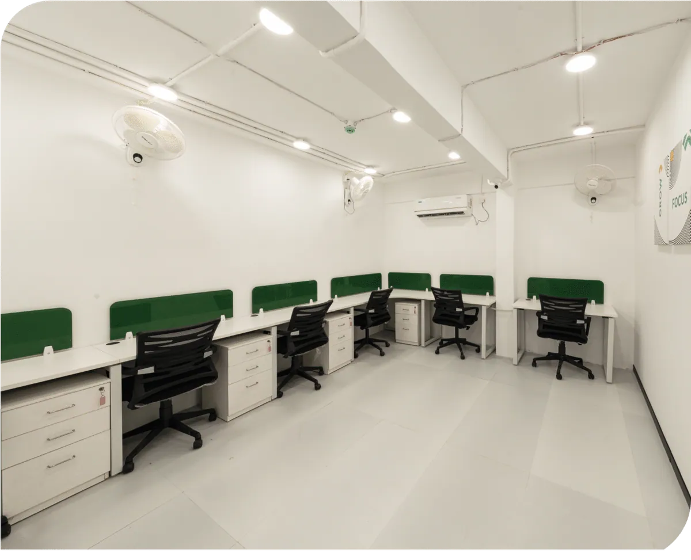

Data, design and technology: how India’s workplaces are being re-engineered
Reading notes on two pieces from FocusOn’s leadership and media page — BIM cutting rework costs by 49%, IoT trimming energy use by up to 30%, and why the office is becoming “a living system”.

Two recent pieces linked from FocusOn’s media page describe the same shift from different angles: Indian offices are being judged less on how they photograph and more on how they perform. This post pulls out the numbers and the ideas I find most useful when talking to clients.
1. The office as a living system
Writing in Homes India Magazine, our Chairman Raja Khan argued that for a long time Indian offices were designed to make a first impression — polished floors, dramatic lobbies — and that this expectation is changing. The measurable claims he cited:
- BIM and shared digital models: a rework-cost reduction of 49% (academic review, ScienceDirect).
- IoT occupancy and environmental controls: energy consumption down by as much as 30% and operating expenses by 20% (MDPI Buildings).
- Digital twins: 77% of organisations report they helped reduce carbon emissions, averaging a 15% reduction.
- Post-occupancy evaluation: capturing how people actually move through a space so meeting rooms get resized and circulation improves.
The modern office is no longer a static object. It is something closer to a living system. Planned carefully, tested early, observed continuously and improved quietly.— Raja Khan, Chairman, FocusOn Interiors, in Homes India Magazine
2. Technology as creative intelligence
Commercial Design India’s insight piece on smart-office technology makes the case that precision enables creativity rather than constraining it. Some of the figures it gathers:
| Finding | Figure | Attributed to |
|---|---|---|
| People who misjudge scale from 2D floor plans | >65% | Stanford |
| Reduction in design changes with early digital coordination | up to 40% | McKinsey |
| Less rework with integrated digital workflows | 23% | Autodesk |
| Occupants citing poor acoustics as a top complaint | >50% | World Green Building Council |
| Meeting rooms under-used | ~40% | Leesman |
| Productivity gain from better lighting and air | up to 16% | ASID |
| Projects more likely to finish on time with digital delivery | 30% | Deloitte |
3. What FocusOn actually does with this
SiliconIndia’s March 2026 feature described how we adopted AR/VR early “as a core validation tool rather than a presentation layer”: clients step into a proposed workspace before construction, evaluate ceiling heights, workstation density, lighting and circulation, and give precise feedback. Digital tracking of procurement schedules and site milestones then keeps the build aligned to what was approved.

The takeaway
None of this makes workplaces colder. Designers work with clearer information, spaces adapt more easily, and people spend their days in environments that respond to them. For a delivery-led firm, it also means fewer surprises on site — which is where every one of those percentages turns into money and time saved for the client.
Sources